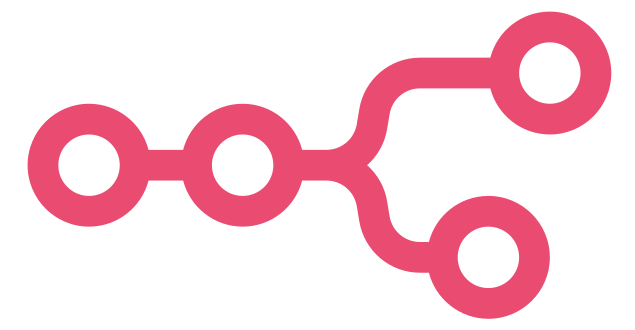
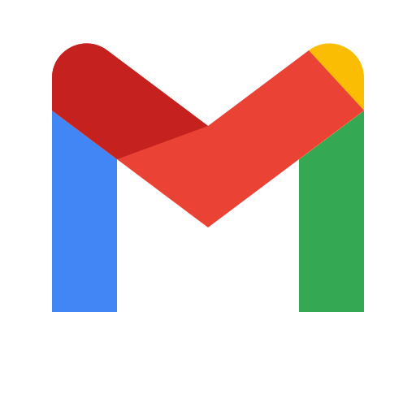
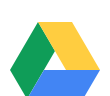

Admin relief
Inbox sorting, lead updates, calendar coordination, client follow-ups, and recurring reports can run with less manual effort.
I help busy founders, coaches, agencies, and teams remove repetitive admin work by building smart automations across email, CRM, calendars, forms, spreadsheets, ChatGPT, Codex, Gemini, and project management systems.

n8n ChatGPT Codex Gemini
Gmail
Google Drive Zoho CRM Google Sheets Calendar Telegram Facebook API IntegrationI combine virtual assistant reliability with workflow design and integration skills, so your systems are organized, documented, and easy for your team to use after launch.
Inbox sorting, lead updates, calendar coordination, client follow-ups, and recurring reports can run with less manual effort.
Forms, CRMs, spreadsheets, ChatGPT or Gemini summaries, and project boards stay synced so every lead or client lands in the right place.
Automations include checkpoints, error paths, and practical documentation, keeping your workflows reliable and easy to maintain.
I am an AI Automation Virtual Assistant and Workflow Integration Specialist focused on helping business owners organize their operations, reduce repetitive admin work, and connect the tools they already use.
My background combines virtual assistant support, workflow thinking, and hands-on automation setup. I like turning scattered tasks into simple systems that are easier to manage, easier to explain, and easier to improve over time.
Pick a focused setup or bring me into your operations for ongoing automation assistance.
Daily operations support enhanced with ChatGPT, Codex, and Gemini for summaries, drafting, task routing, inbox triage, and client follow-up.
Design and build automated paths that move data, trigger reminders, notify teams, and keep work progressing without constant checking.
Connect the tools your business already uses and make sure each system receives accurate, usable information.
Each sample project is designed around your current tools, your client's journey, and the places where repetitive work slows you down.
I map your current tasks, tools, bottlenecks, and the automations with the highest return.
I create the workflows, connect your apps, test edge cases, and keep the setup understandable.
I review the live workflow, tune prompts or triggers, and document how to maintain it.
Tell me what tools you use and which tasks you want off your plate. I can help turn that into a practical automation plan.